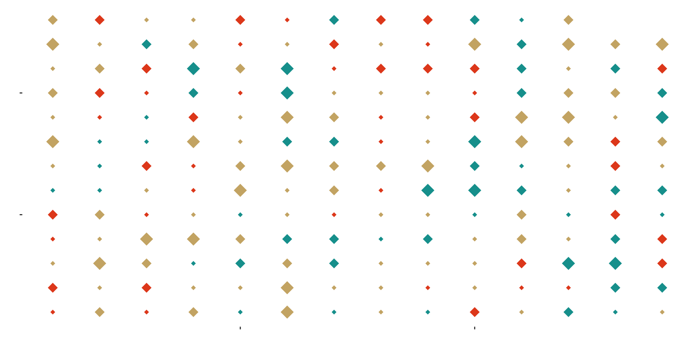
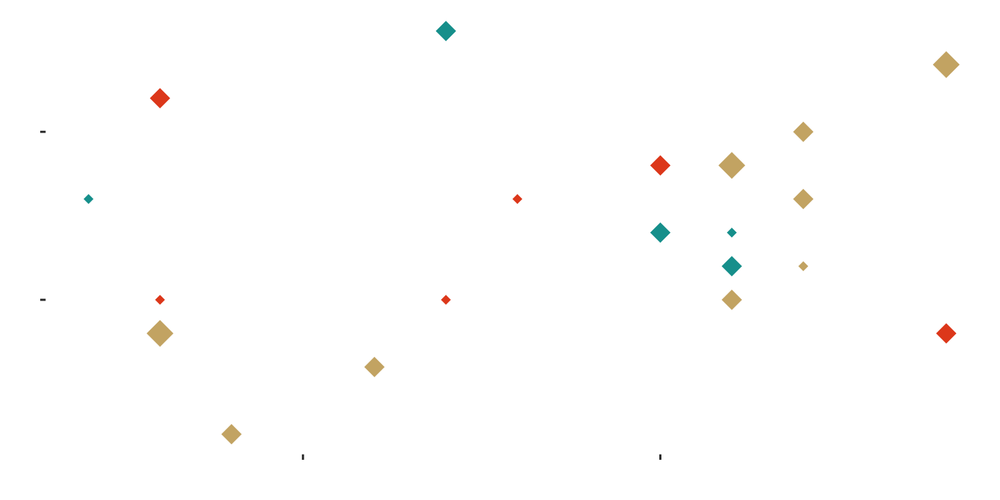
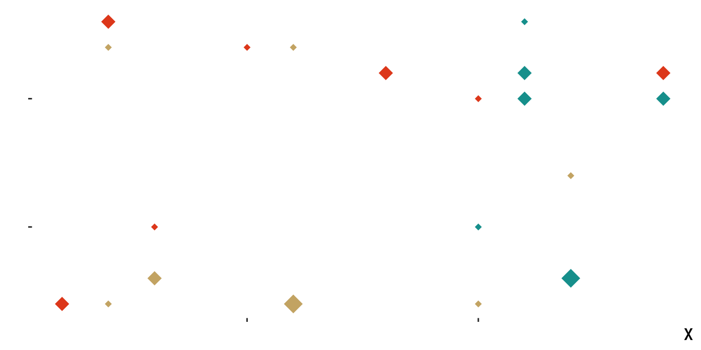
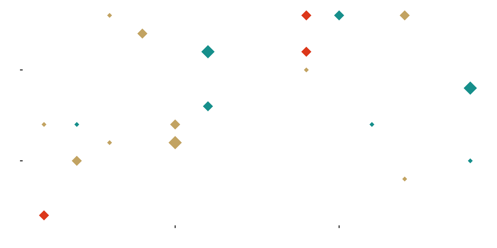
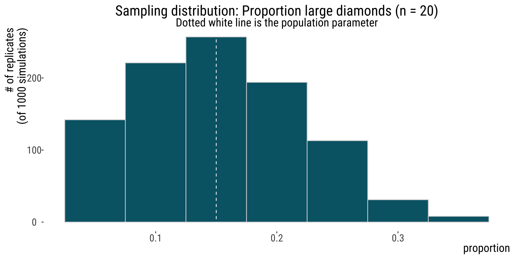
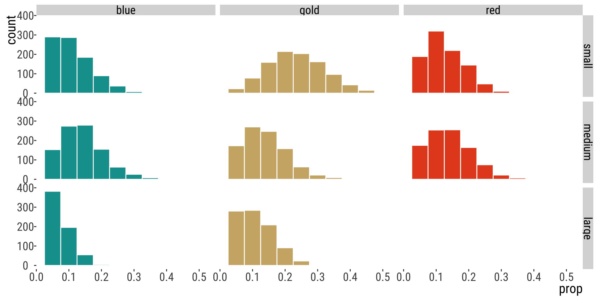
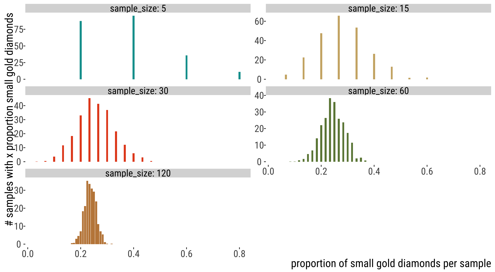
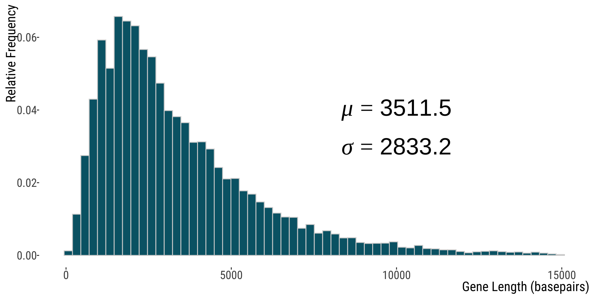

4.1.Estimation with Uncertainty
Bárbara D. Bitarello
2025-10-22
Key Learning Objectives
- Understand that because estimates take values by chance, they will differ from true population parameters.
- Connect the spread of the sampling distribution to uncertainty in estimates.
- Recognize the standard error as the standard deviation of the sampling distribution.
- Understand the confidence interval as a plausible range of a parameter, given an estimate and uncertainty in it.
Samples Take Their Value by Chance
Sets of samples from the same distribution can be different.
Therefore, estimates obtained from samples from the same population can differ by chance.
Samples: what’s the point?
We sample because we cannot measure the entire population.
When we take samples, we cannot see the sampling distribution.
Still, considering the process of sampling allows us to quantify the uncertainty in estimates.
Estimation: from samples to parameters (hopefully)
Two Ways to Conceptualize Sampling
Okay, so how do we do this?
Here are the two right* ways to think about the process of taking a sample from a population.
If you had a full population and made an estimate from a sample of size \(n\).
Think about the PROCESS that generates your population data: what would a sample generated by this process look like? (e.g. flipping a coin).
- But sometimes one is more convenient than the other.
Some definitions
Estimation: a process of inferring a population parameter from sample data. This estimated value is almost never exactly identical to the true parameter value.
Sampling error affects precision of estimates. It is basically inevitable because it is inherent to random sampling.
Generating samples from a population
In two easy steps:
Take a sample of size n.
Calculate the parameter estimates.
This is how we do science.
Example
A Population of Diamonds
A population of 180 diamonds of different sizes and colors.
| small | medium | large | |
|---|---|---|---|
| blue | 18 | 24 | 9 |
| gold | 42 | 24 | 18 |
| red | 21 | 24 | 0 |
A sample of 20 diamonds
Code
star.sample.size <- 20
stars.sample <- sample_n(stars, size = star.sample.size, replace = FALSE)
ggplot(stars.sample, aes(x = x, y = y, color = color, size = size)) +
geom_point(shape = 18, show.legend = FALSE) +
scale_color_manual(values = asteroidcity1()) +
bb_theme() +
ylab("") +
xlab("") +
theme(axis.text.x = element_blank(), axis.text.y = element_blank())
| small | medium | large | |
|---|---|---|---|
| blue | 2 | 3 | 0 |
| gold | 1 | 5 | 3 |
| red | 3 | 3 | 0 |
Another sample of 20 diamonds
Code
star.sample.size <- 20
stars.sample <- sample_n(stars, size = star.sample.size, replace = FALSE)
ggplot(stars.sample, aes(x = x, y = y, color = color, size = size)) +
geom_point(shape = 18, show.legend = FALSE) +
scale_color_manual(values = asteroidcity1()) +
bb_theme() +
ylab("") + ylab("") +
theme(axis.text.x = element_blank(), axis.text.y = element_blank())
| small | medium | large | |
|---|---|---|---|
| blue | 2 | 3 | 1 |
| gold | 5 | 1 | 1 |
| red | 3 | 4 | 0 |
Aaaand … another
Code
star.sample.size <- 20
stars.sample <- sample_n(stars, size = star.sample.size, replace = FALSE)
ggplot(stars.sample, aes(x = x, y = y, color = color, size = size)) +
geom_point(shape = 18, show.legend = FALSE) +
scale_color_manual(values = asteroidcity1()) +
bb_theme() +
ylab("") +
xlab("") +
theme(axis.text.x = element_blank(), axis.text.y = element_blank())
| small | medium | large | |
|---|---|---|---|
| blue | 2 | 4 | 1 |
| gold | 6 | 2 | 1 |
| red | 1 | 3 | 0 |
One Last Sample of 20 Diamonds
Code
star.sample.size <- 20
stars.sample <- sample_n(stars, size = star.sample.size, replace = FALSE)
ggplot(stars.sample, aes(x = x, y = y, color = color, size = size)) + geom_point(shape = 18,
show.legend = FALSE) + scale_color_manual(values = asteroidcity1()) + bb_theme() +
ylab("") + xlab("") + theme(axis.text.x = element_blank(), axis.text.y = element_blank())
| small | medium | large | |
|---|---|---|---|
| blue | 3 | 2 | 2 |
| gold | 5 | 4 | 1 |
| red | 0 | 3 | 0 |
Sampling Diamonds: Lessons Learned
-
“Sampling is random”
Estimates from sampling efforts varied and did not perfectly capture the true population values. I.e, there is sampling error involved.
Random DOES NOT mean that all outcomes are equally probable. E.g.:
There are no LARGE RED diamonds in the population so we never sampled a LARGE RED diamond.
The most common diamond color in the population is gold. Gold is often the most common color in a sample.
The sampling distribution!
The sampling distribution
The sampling distribution is the distribution of the parameter estimate of interest from these samples
It is basically a histogram of all the values that a sample statistic can take on
They are super important: when you take a sample from a population, you base your conclusions on that sample, but we know samples vary randomly (even in the absence of bias)
To be able to interpret your sample results (say, mean bill length in a sample of 20 penguins from a given population) you need they stand amongst the “crowd”
The “crowd” of all possible sample statistics you can possibly get is the sampling distribution
Generating a sampling distribution
In three easy steps:
Take a sample of size \(n\).
Calculate the parameter estimates.
Rinse and repeat many times.
Example: The Sampling Distribution of Diamonds
| replicate | color | small | medium | large |
|---|---|---|---|---|
| 1 | blue | 0.25 | 0.10 | 0.05 |
| 1 | gold | 0.25 | 0.10 | 0.05 |
| 1 | red | 0.00 | 0.20 | 0.00 |
| 2 | blue | 0.05 | 0.05 | 0.00 |
| 2 | gold | 0.30 | 0.30 | 0.05 |
| 2 | red | 0.05 | 0.20 | 0.00 |
| 999 | blue | 0.15 | 0.15 | 0.05 |
| 999 | gold | 0.25 | 0.10 | 0.15 |
| 999 | red | 0.00 | 0.15 | 0.00 |
| 1000 | blue | 0.10 | 0.15 | 0.00 |
| 1000 | gold | 0.25 | 0.05 | 0.10 |
| 1000 | red | 0.15 | 0.20 | 0.00 |
Sampling distribution of diamond size
| replicate | small blue | small gold | small red | medium blue | medium gold | medium red | large gold | large blue |
|---|---|---|---|---|---|---|---|---|
| 1 | 4 | 3 | 4 | 2 | 2 | 4 | 1 | 0 |
| 2 | 2 | 7 | 3 | 5 | 0 | 1 | 2 | 0 |
| 999 | 1 | 7 | 4 | 1 | 3 | 2 | 1 | 1 |
| 1000 | 2 | 6 | 3 | 4 | 2 | 1 | 1 | 1 |
Sampling distribution of diamond size
Code
ggplot(sampling.dist.large, aes(x = prop)) +
geom_histogram(binwidth = 1/ star.sample.size, color = "lightgray", fill = "#006475")+
geom_vline(xintercept = true.prop.large, lty = 2, color = "white") +
ggtitle(sprintf("Sampling distribution: Proportion large diamonds (n = %s)", star.sample.size),
subtitle = "Dotted white line is the population parameter") +
xlab("proportion")+
ylab("# of replicates\n(of 1000 simulations)")+
bb_theme()
The joint sampling distribution

How does variability in an estimate change with sample size?
Variability in Estimates Decreases with N

Variability in Estimates Decreases with N

Standard Error
The Standard Error: Definition
The standard error reflects the difference between an estimate and the target parameter value.
The standard error predicts the sampling error of the estimate.
The Standard Error of the Mean (SEM)
Because we rarely know the population standard deviation,\(\sigma\), we cannot find the parameter \(\sigma_{\bar{Y}}=\frac{\sigma_{Y}}{\sqrt{n}}\) , the standard error of the population mean.
But, we can use the sample standard deviation, \(s\), to estimate \(SEM_{\bar{Y}}=\frac{s}{\sqrt{n}}\), the standard error of the sample mean.
Also:
The standard error of an estimate is the standard deviation of its sampling distribution!
Example: human gene lengths
Human gene lengths
Code
ggplot(human_genes , aes(x=size)) + geom_histogram(aes(y=after_stat(count / sum(count))),bins=60, color="lightgray", fill="#006475") + xlab("Gene Length (basepairs)") +
ylab("Relative Frequency")+
annotate('text', x = 10000, y = 0.04,
label = "mu==3511.5",parse = TRUE,size=10) +
annotate('text', x = 10000, y = 0.03,
label = "sigma==2833.2",parse = TRUE,size=10)+
bb_theme()
Note: parameters shown are for full dataset (n=20,290) but 26 genes with length > 15,000 were omitted from this plot.
Sampling Distribution: from textbook

That’s all for today

From: makeameme.org
B215: Biostatistics with R